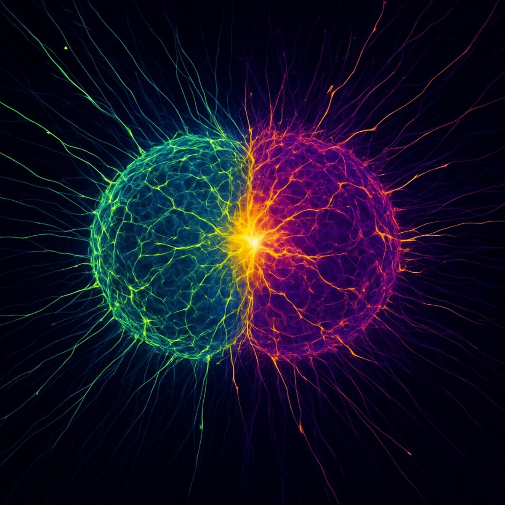

Science
The beauty between cells
Science is not separate from art — it is another form of it. Under a fluorescence microscope, a single neuron becomes a cathedral of light. A dividing cell traces patterns no painter could invent. As a PhD researcher, I move between both worlds: rigorous inquiry at the bench, and a camera that refuses to stop noticing what is beautiful about it.

Fluorescence microscopy · MAP2 (green) · β3-Tubulin (magenta) · Patient-derived DRP1 mutation model
About my research
I am a PhD student at Vanderbilt studying the molecular machinery that governs how our cells divide and communicate — specifically Dynamin-Related Protein 1 (DRP1), the primary driver of mitochondrial and peroxisomal fission.
Mutations in DRP1 cause a rare neurodevelopmental disorder called EMPF1 — an epileptic encephalopathy marked by impaired neurogenesis and severe neurodevelopmental delay. My work interrogates how DRP1 activity shapes metabolic signaling and early human neurogenesis.
I work with human induced pluripotent stem cells (hiPSCs) carrying patient-derived DRP1 mutations — generated via CRISPR/Cas9 or reprogrammed from patient fibroblasts — to derive neural progenitors and neurons as human cellular disease models.
Research context
DRP1 is the primary effector of mitochondrial and peroxisomal fission. Despite its essential role, the mechanisms by which organelle fission contributes to metabolic signaling and cell fate determination during human neurogenesis remain poorly understood. This project characterizes how DRP1 activity shapes these processes using hiPSC-derived neuronal models.
Vanderbilt School of Medicine
The Researcher
The same instinct that puts a camera in my hands is what drew me to science: a compulsion to look closely at things most people walk past. As a kid I was curious about the world at scales too small to see. Eventually I found my way to a microscope — and that curiosity became a PhD.
I am a PhD Candidate in Cell and Developmental Biology at Vanderbilt University, working in Dr. Vivian Gama's lab. My research asks how a single protein — DRP1 — shapes the way human neurons develop, and what goes wrong when it doesn't work. The disease I study, EMPF1, is a rare epileptic encephalopathy caused by mutations in this protein. To model it, I generate human neurons directly from patient-derived stem cells and use CRISPR/Cas9 to engineer the mutations we want to study.
Before Vanderbilt I spent three years as a Research Assistant at Case Western Reserve University, building iPSC models of ALS and epileptic encephalopathy — work that contributed to a publication in EMBO Molecular Medicine. I also presented at an interdepartmental motor neuron meeting at CWRU, which was my first real taste of sharing science with a room full of people who cared about the same questions.
What connects the lab to the lens is simple: both ask you to be patient, to look carefully, and to find the frame that makes something invisible — visible.
Microscopy Highlight Reel


Microscopy Videos
Live-cell and time-lapse microscopy from the DRP1 neurogenesis project. Captured using Nikon Elements with ND2 acquisition pipelines.
Full Gallery


A dedicated science portfolio site with publications is also in the works.